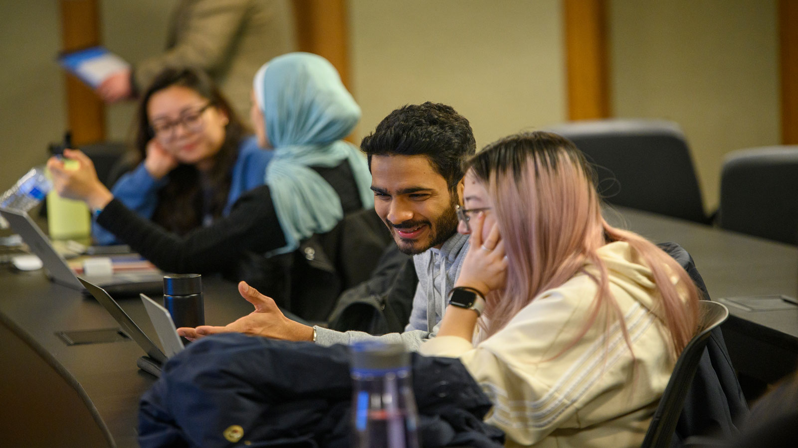

At the University of Michigan School of Information (UMSI), we are committed to supporting our students' academic success by offering a wide array of resources and services. The following are a few of the resources offered to help you reach your full academic potential.
Academic Advising Team
Our academic advising team provides personalized guidance to help you navigate your curriculum, select courses, and address any academic challenges or questions you may encounter during your studies.
University Library System
UMSI students also have access to the extensive collections and study spaces within the University Library system, offering both digital and physical resources essential for research and coursework.
Tutoring
Our specialized tutoring services and the UMSI Writing Center are available to support you in mastering complex subjects and enhancing your written communication skills.
Diversity, Equity, and Inclusion Resources
We value ensuring our students are able to feel included in all spaces at UMSI. Below are a few groups that help encourage DEI on campus.
Center for The Education of Women+
The Center for The Education of Women+ (CEW+) helps students navigate circumstantial barriers by providing academic, financial, and professional support to help them reach your personal potential. Through career and education counseling, funding, workshops, events, and a diverse, welcoming community, CEW+ helps empower women.
First Gen
First Generation at U-M provides a community to connect with first-generation students and those who will support and encourage you throughout your journey.